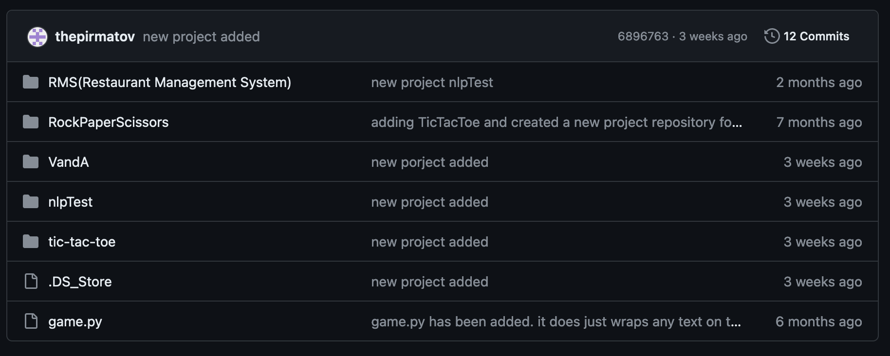

I am Beksultan Pirmatov. I am an international student at NAU.
Coding Languages: Java, C, Python, C#, and some JavaScript.
Frameworks: Flask and Apache Maven.
Job Experience: around 8 months intership (Hoptub).
Major: Software Engineering.
Current Projects: Learning to how to train NLP and building a website that uses OpenAI's Whisper to generate transcription of audio or video files.

Projects
Check out my projects on GitHub! I've been working on various projects...